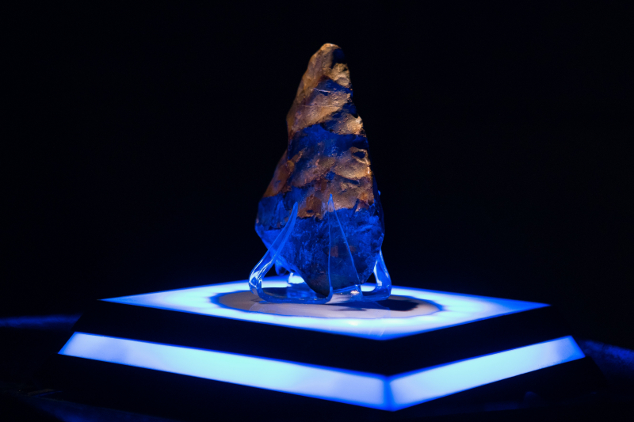

Про нього
Ніхто не знає його віку. Ніхто не бачив його обличчя. Але всі чули його тишу.
Кажуть, він з’являється лише тоді, коли хтось забуває щось важливе. Його присутність — як шепіт у порожній кімнаті.
Його колекція складається з:
- Забутих слів
- Ті, що колись означали щось важливе
- Ті, що ніколи не були вимовлені
- Ті, що існують лише у снах
- Порожніх книг
- Книги без назв
- Книги, що пишуться самі
- Невимовних думок
- Ті, що лунають у тиші
- Ті, що змінюють форму, коли хтось намагається їх описати
Архіваріус не збирає речі — він збирає відлуння. Його колекція не має меж, бо межі — це вигадка тих, хто боїться невідомого.
Артефакт дня

Цей предмет не має назви. І саме тому він важливий.
Іноді він змінює форму. Іноді — зникає зовсім. Але завжди повертається , коли хтось згадує.
Легенди та чутки
Про Архіваріуса ходить багато історій. Одні — старі, як пил на полицях, інші — народжуються щойно хтось забуває щось важливе.
- Кажуть, він зберігає не речі, а моменти.
- Погляд, який не був помічений
- Слово, яке не було сказане
- Рішення, яке не було прийняте
- Інші вірять, що він — не один.
- Є Архіваріуси для снів
- Є ті, що збирають запахи
- Є ті, що зберігають тіні
- А дехто каже, що він — вигадка.
- Щоб пояснити забуте
- Щоб виправдати мовчання
- Щоб не бути самотнім у спогадах
Ніхто не знає, яка з легенд правдива. Але всі погоджуються в одному: він з’являється тоді, коли його не чекають.